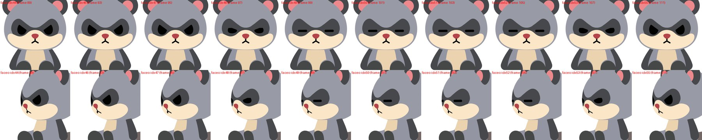
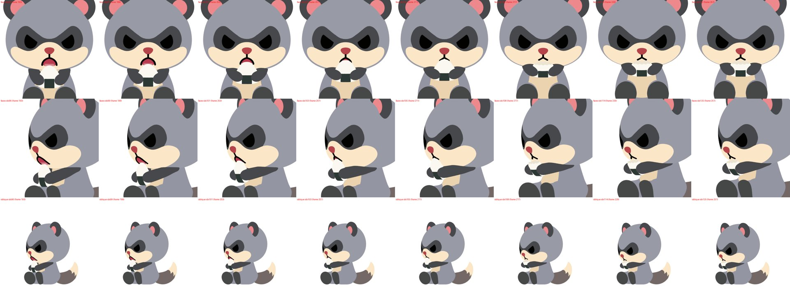
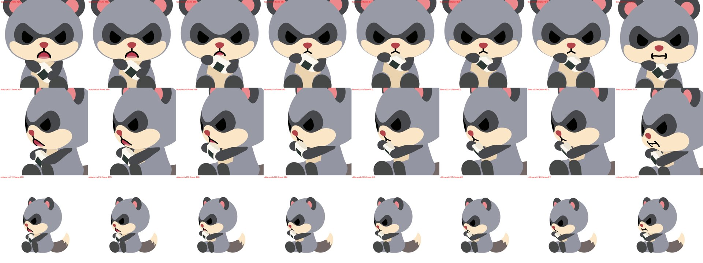
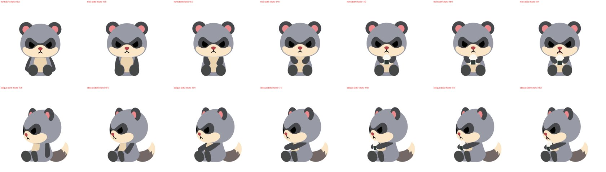

← 一覧
おすわり → おにぎりを食べる（r9：新しい口＋目を閉じる＋まばたき）
2026-10-01 更新。オーナー選択 C1（口 D すぼむ↔開く＋食事中は元動画どおり目を閉じる）と、通常まばたき ①（2回まばたき由来）を本番に組み込みました。左から：元動画（SSOT）｜実機 横｜斜め｜正面。
顔のアップ（左2列：元動画、右2列：実機）
要所
座り終わりの通常まばたき（約1.6秒）

確認していただきたい点
- 食事中は、かじる合間に目を開けている時間が約0.2秒しかないため、通常まばたきは座り終わりの1回だけです。
- おにぎりの出方・1口目の接近の深さなど、前回の確認点（下の r8m の記載）はそのままです。
前回（r8m）
おすわり → おにぎりを食べる（3口）
SE212 / native d95f4bd1291f / 2026-09-30。左から：元動画（SSOT）｜実機 横｜斜め｜正面。
今回直したこと
- 噛む間は頭が動かず、口元（マズル）だけでもぐもぐ（元動画と同じ）。
- 小刻みな揺れを根本から解消：動きのキーを元動画の意味のある区切りにだけ置き、各パーツが理由のあるときだけ1本の弧で動くように作り直しました（揺れ検出ゲート 0件）。
- 2・3口目も口に届く：1口目は頂点、2口目は左の縁、3口目は右の縁をかじります。かじる前に手首でおにぎりを回し（片手を上げ、片手を下げる）、小さくなったおにぎりには少し深く身を乗り出します。おにぎりの向きは両手の位置から決まるので、手から離れません。
- かじり跡はあごがパクッと閉じた瞬間につきます。
顔のアップ（左2列：元動画、右2列：実機）
各口の噛む瞬間
1口目（上：正面アップ／中：斜めアップ／下：斜め全身）

2口目（手首で回した左の縁をかじる）

確認していただきたい点（未確定）
- おにぎりの出方：手が閉じた瞬間に2フレームで現れます（元動画に持ち上げる場面がないため）。気になるなら「手元から持ち上げる」動きを追加できます。

- ほっぺのふくらみ：今は持続 +5.8%（元動画の目安 7〜10%）。もう少し膨らませるかどうか。
- 1口目の接近時：おにぎりの頂点が開いた口の中へ 0.028 入ります（社内ゲート 0.02 を少し超過）。見た目は「かじる」動きとして読めるため、そのままにしています。
- 前かがみ（元動画は食べる間ずっと前傾）とシッポの動きは、別の土台（chores214）との統合時に対応予定です。
レビュー：自分の目で全場面を確認＋GPT-6 レビュアー ACCEPT（軽微な指摘1件＝上記1）。